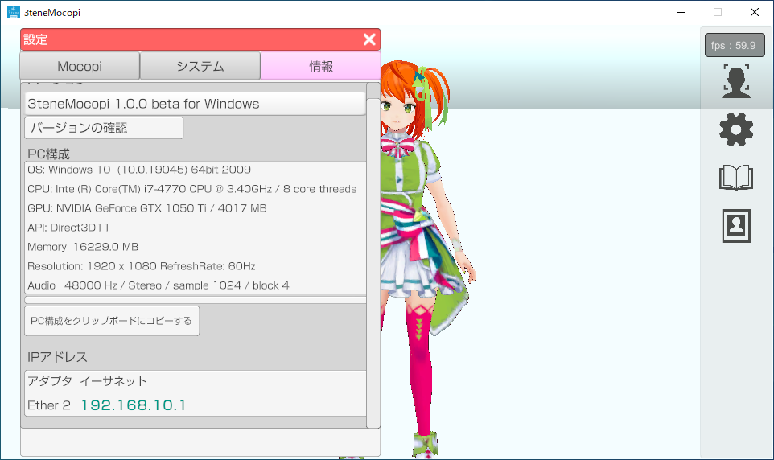
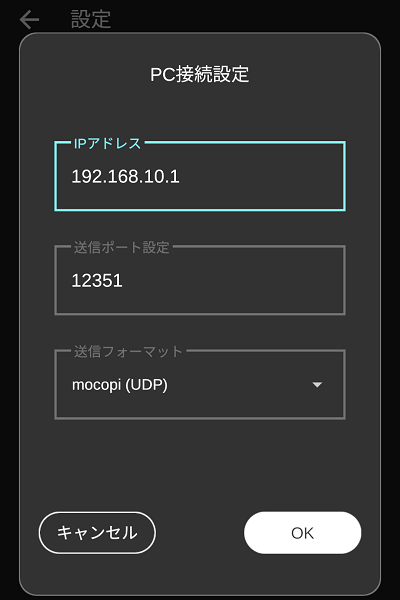
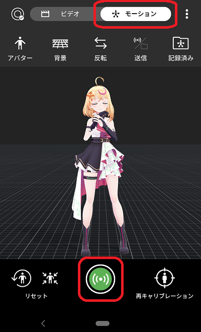

mocopi の利用にはmocopi 専用アプリ対応のスマートフォンが必要になります。

お使いのスマートフォンが mocopi 専用アプリに対応しているかどうかは
mocopi 公式ホームページにて確認をお願いします。
※一覧にある機種よりも古いスマートフォンに専用アプリがインストールできても
性能が足りず安定動作しない可能性が高いです。
専用センサーで頭、体、腕、足を動かします。
モーションアプリのダウンロードの仕方
mocopi の利用にはmocopi 専用アプリ対応のスマートフォンが必要になります。
お使いのスマートフォンが mocopi 専用アプリに対応しているかどうかは
mocopi 公式ホームページにて確認をお願いします。
※一覧にある機種よりも古いスマートフォンに専用アプリがインストールできても
性能が足りず安定動作しない可能性が高いです。
mocopi を利用するには下記の手順で進める必要があります。
- スマートフォンに専用アプリをインストールし、mocopi が動作するのを確認する。
専用アプリでの動作については mocopi 公式の動画などを参照して設定をしてください。- 3teneMoApp_Mocopi をインストールしたPCとスマートフォンをWiFi接続して動作するのを確認する。
※セキュリティソフトによってブロックされ、通信できない場合があります。
その場合にはファイルウォールの確認をお願いします。
セキュリティソフトについて
3teneMoApp_Mocopi の設定「情報」に表示されている IP アドレスを mocopi 専用アプリに入力します。

専用アプリの操作 → 設定 → PC接続設定 → IPアドレス入力 → OK

3teneMoApp_Mocopi のトラッキングを開始した状態で専用アプリから送信を行うと
アバターが動作するようになります。
専用アプリの操作手順
→ 上部の「モーション」をタップ → 下部の中央にある送信アイコンをタップ

- 3tene と 3teneMoApp_Mocopi を接続して動作するのを確認する。
モーションアプリの動作確認後に 3tene と連携接続を行って使用します。
モーションアプリについて